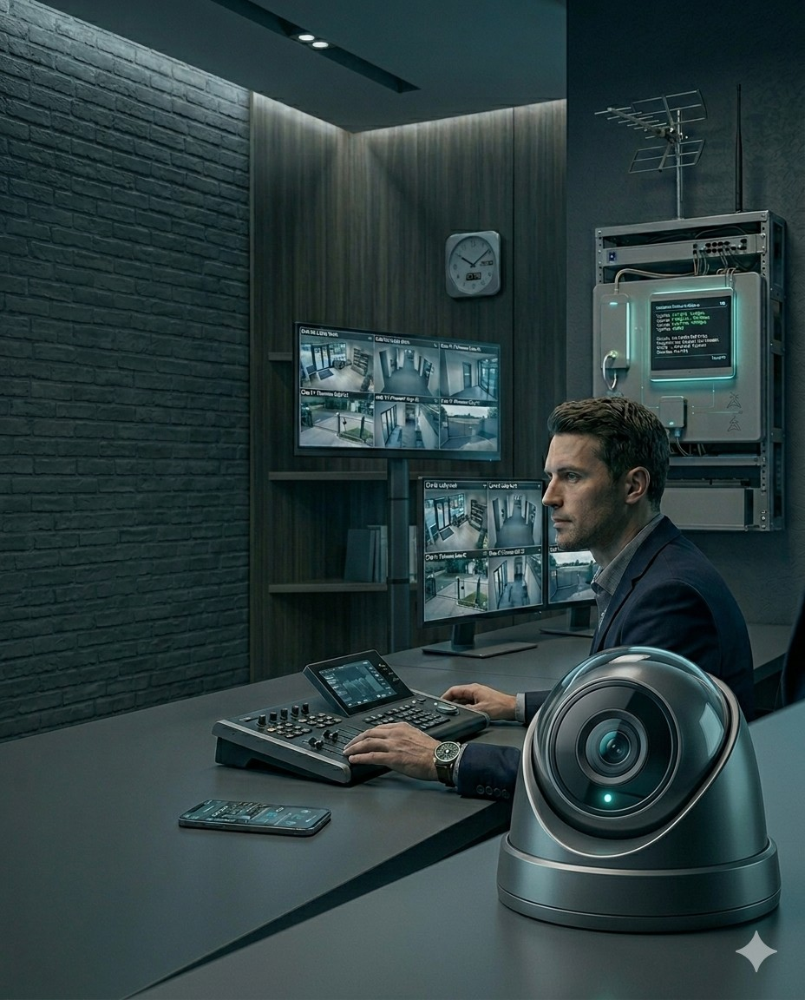
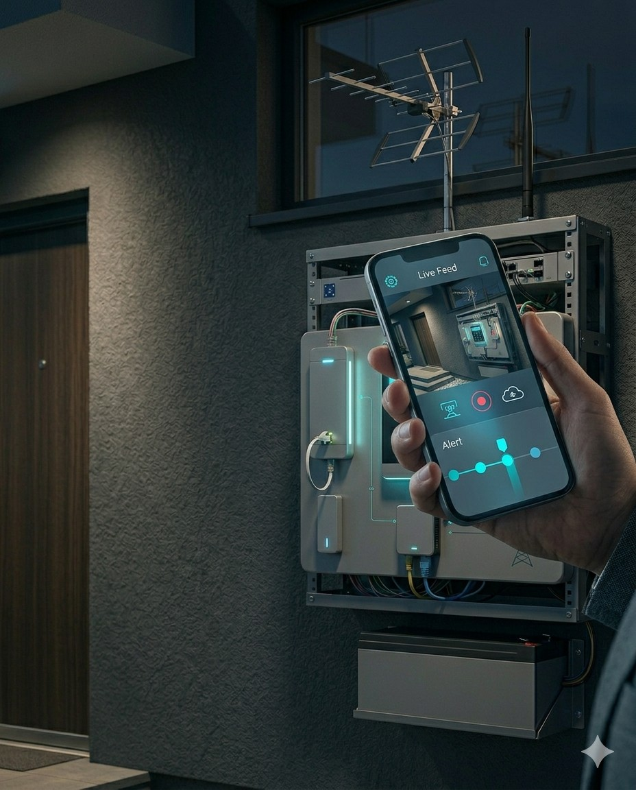

Vigilancia integral
Supervision de accesos, perimetros, sectores sensibles y puntos ciegos con imagen clara y estable.
Disenamos soluciones de videovigilancia para hogares, comercios y espacios profesionales, con instalacion prolija, acceso remoto y una configuracion pensada para el uso real de cada cliente.

Supervision de accesos, perimetros, sectores sensibles y puntos ciegos con imagen clara y estable.
Consulta en vivo y revisa grabaciones desde tu celular o computadora, estes donde estes.
Configuramos deteccion por movimiento y eventos clave para reducir falsas alarmas y mejorar la respuesta.
Las cámaras pueden trabajar junto a alarmas, cercos y monitoreo para una protección más completa.

Control de accesos, patio, cochera, ingresos secundarios y supervision remota para la rutina diaria.
Visualizacion de salon, caja, deposito y entradas para mejorar seguridad, control y trazabilidad.
Cobertura de recepcion, circulaciones y sectores sensibles con criterios de instalacion claros y ordenados.
Analizamos puntos de acceso, riesgos, iluminacion y distancias para definir la mejor cobertura.
Te recomendamos el tipo de camara, grabacion y alcance mas conveniente para tu caso.
Realizamos el montaje, dejamos operativo el acceso remoto y validamos funcionamiento.
Te acompanamos para ampliar cobertura, integrar otros sistemas y mantener la solucion confiable.
Si queres proteger mejor tu casa o tu negocio, te ayudamos a definir una solucion de camaras clara, prolija y escalable.